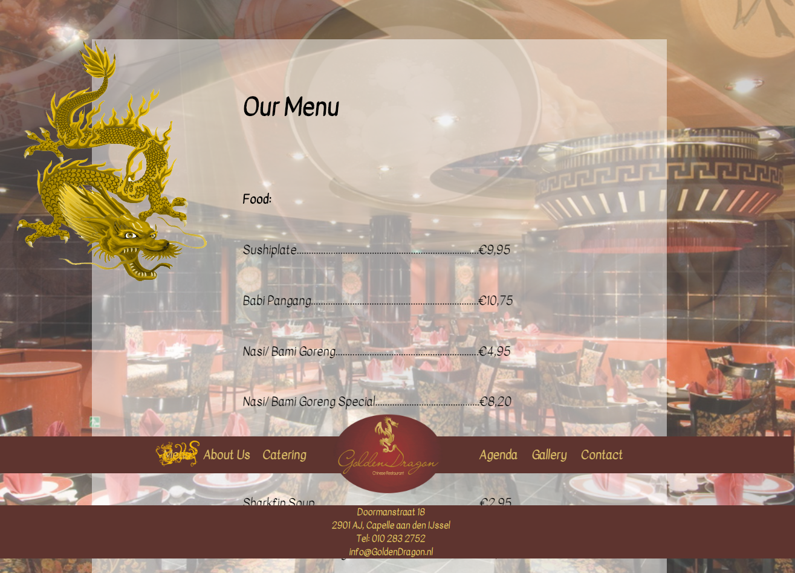
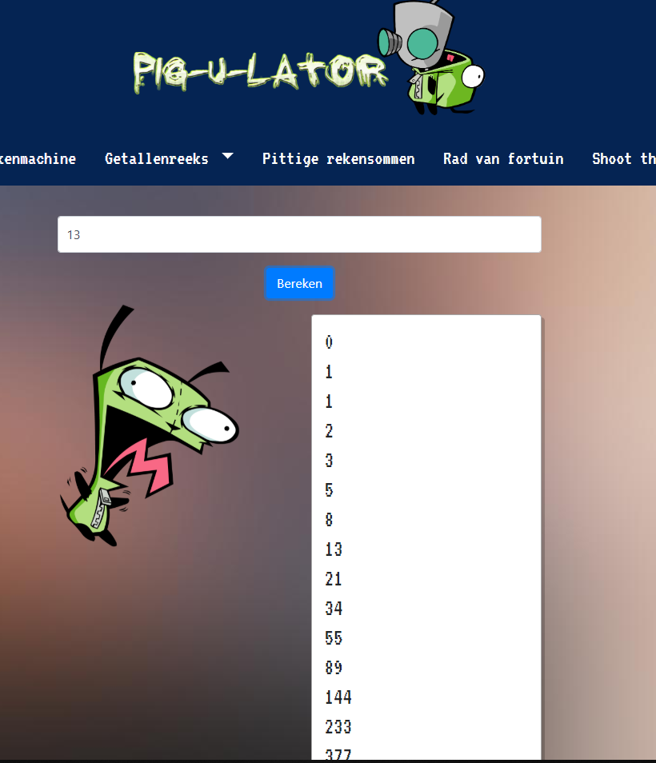
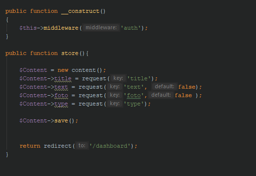
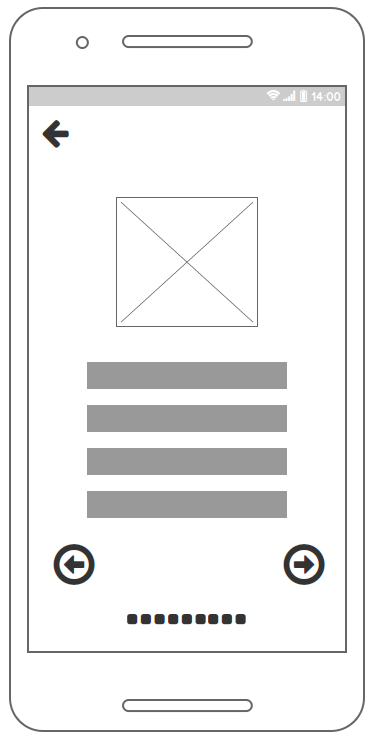

{kind=link}
Dit was een project voor school waarbij je een website moest maken voor een specifiek restaurant.
Gebruikte talen: HTML/CSS
{kind=link}
Met deze applicatie kon je een getal invoeren en dan liet hij de reeks van fibonacci zien tot dat getal
Gebruikte talen: HTML/CSS, Javascript, PHP

Voor een project voor school hebben wij ook een CMS moeten maken in groepsverband.
Een wireframe van de vertaalapp om de realisatie zo strak mogelijk te laten verlopen.
{kind=link}
Voor een project voor school hebben wij ook een CMS moeten maken in groepsverband.
De volledige website was aanpasbaar voor de admins en zo konden zij gemakkelijk teksten en plaatjes wijzigen.
Gebruikte talen: Laravel (PHP Framework)
{kind=link}
Een wireframe van de vertaalapp om de realisatie zo strak mogelijk te laten verlopen.
Dit was erg handig omdat het project binnen een groep werd gemaakt en zo had iedereen een goed globaal beeld van wat er gebeuren moest.
(Voor wireframes/mockups gebruik ik meerdere programma's. Zowel Photoshop als Balsamiq
{kind=link}